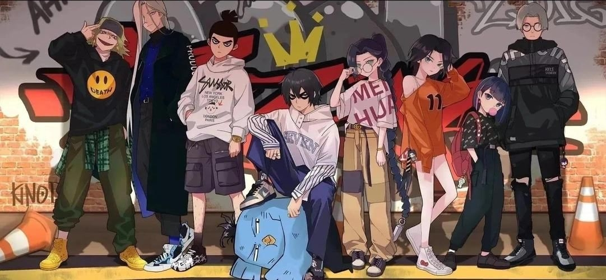

- 

- 1
- 2
- 3
- 4
<
>
柒，原名未知。15岁成为玄武国七大暗影刺客之一，原玄武国首席暗影刺客，现已失忆，穿着一袭紫衣，发型桀骜，面容冷峻，赤色瞳孔；此前为了保护一名白衣女子而杀掉玄武国的神兽，所以成为刺客通缉人物，而现在逐渐恢复记忆。
赤牙，原名阿权，玄武国七大暗影刺客之一，原天莲派弟子，因为修炼血魔大法被逐出门派。可以通过吸取他人的血变强，吸的人越厉害越强 在和伍六七的对决中落败，后被青凤重伤，后被江惠莲带回天莲派禁地。 第九集与江惠莲达成交易，回到小鸡岛与同为暗影刺客的白狐交手
青凤，原名不详，梅花十三的师傅，21岁成为玄武国七大暗影刺客之一的双刀流刺客，使用剑技时迸发的能量犹如青色的凤凰。 原本是青云国王子，十年前由于玄武国为夺取青云国国宝，现任“首领”刺杀了国王一家，年幼的青凤逃过一劫后，为了给双亲以及所有青云国子民报仇，加入刺客组织，借机刺杀首领 。 在与首领的对决中，成功击伤首领，但由于和梅花十三的“感情”，最终放弃击杀首领，去救十三，并和曼珠沙华以及石门交手，并成功重创二人，但自己也受伤不轻
玄武国七大暗影刺客之一同时也是七大暗影刺客中唯一的女性。有病娇的属性，对于得不到的东西就会毁掉。告诉柒自己因为嫉妒杀了柒两年前保护的白衣女，在梅花十三和黑鸟搏斗时候坐着观战，在黑鸟落败后，帮忙恢复了黑鸟的容貌，表示谢幕也要漂漂亮亮，决定亲手解决伍六七在青凤叛变后，与石门一起与前来营救梅花十三的清凤交手，成功刺伤清凤，但同时也被青凤重伤,生死不明
曾经的飞鸟门掌门，之前飞鸟门分两派——黑鸟系和白鸟系;很久以前两派打过一架，最后白鸟系掌门白鸟胜利了但是也元气大伤，黑鸟系掌门黑鸟输了战斗，后成为了玄武国暗影刺客之一。黑鸟在和梅花十三的战斗中被魔刀千刃划伤，在与伍六七战斗中因疑似被魔刀千刃吸收生命力以及功力而落败,生死不明 (因为黑鸟门秘籍容易走火入魔,所以黑鸟实际上骨瘦如柴)
冷酷、果断，故事女主角，玄武国女刺客，刺客排行榜第37位，擅长使用双刀流和梅花镖，发辫上的短刃可用于攻击。目标是击败所有男人，最终目标是击败自己的父亲。